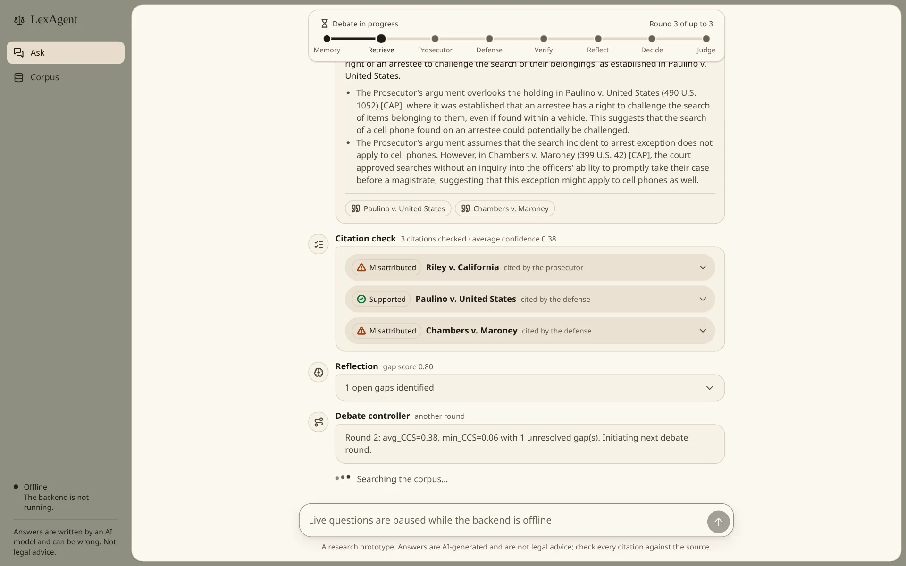
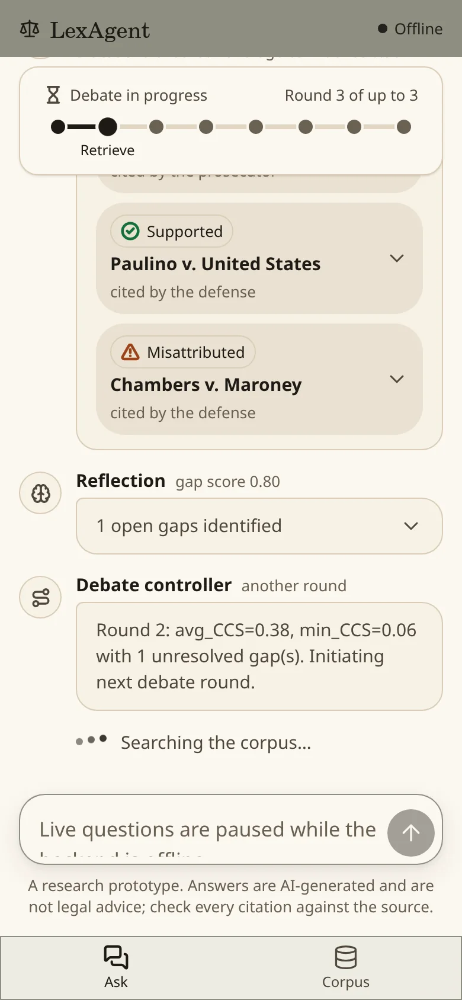
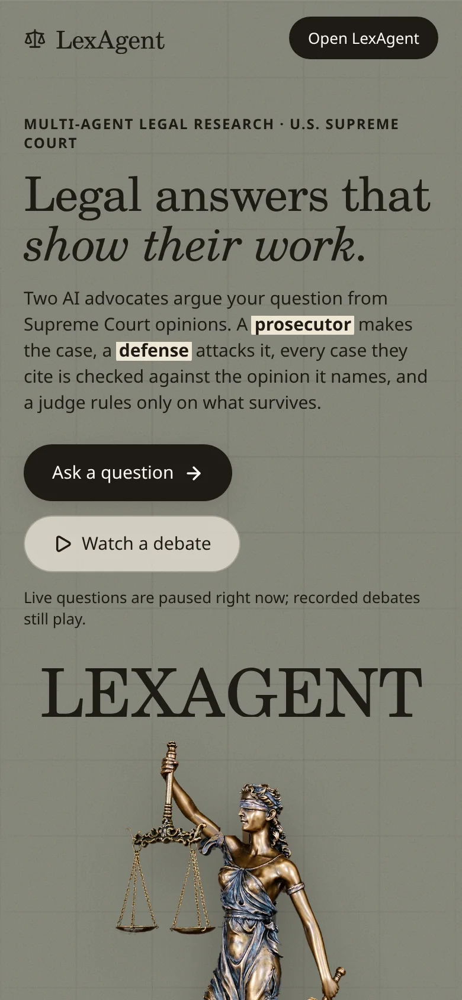
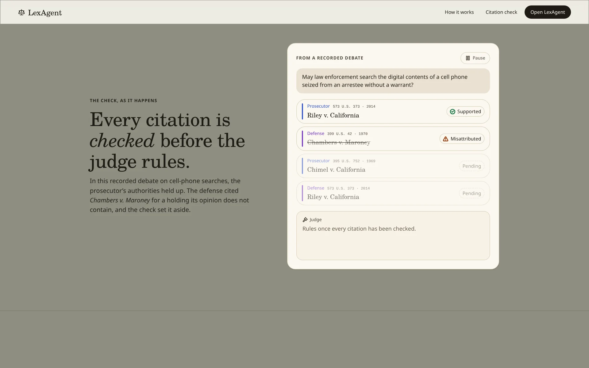
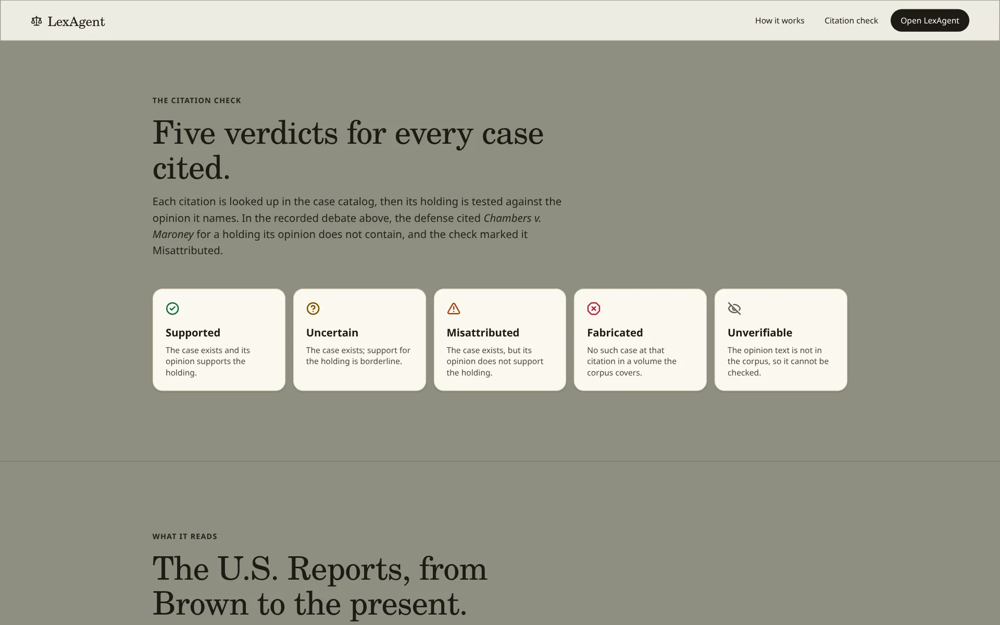

Language models invent legal authorities, and credit real cases with holdings those cases never contained. LexAgent makes an answer survive an adversary and a citation check first: a prosecutor and a defense debate a question over U.S. Supreme Court opinions, every case they cite is tested against the opinion it names, and a judge rules only on what survives.
Interface





The debate
One model answering alone will cite cases that do not exist. LexAgent turns a question into a LangGraph run with an adversary and a verifier inside the loop, and streams every stage to the browser as it happens.
-
01
Retrieve
Dense embeddings and BM25 are fused by reciprocal rank, with a cap on passages per case so one long opinion cannot fill the context. Eight passages per round.
-
02
Argue and challenge
The prosecutor makes the strongest case the passages allow, citing at most two authorities. The defense attacks the weak points with counter-authority from the same corpus.
-
03
Verify
Each citation is resolved to the actual opinion, then its holding is tested against that opinion's own text. Five verdicts, from Supported to Fabricated.
-
04
Decide and rule
A controller reads citation scores and open gaps and either stops or runs another round, up to three. The judge writes the answer from the citations that survived.
Architecture
-
E×S
Existence times support
A citation's confidence is two separate questions multiplied: does the case exist at that reporter cite, and does its opinion entail the holding claimed for it? A case name shared with one-line order entries is resolved to the real opinion first.
-
≡
A ledger across rounds
What each round verified is kept in a ledger, so a later round cannot quietly lose a citation that already held up, and the controller stops as soon as a reliable one is in hand.
-
⇣
A corpus that survives crashes
The U.S. Reports are built in three resumable stages: download, chunk, index. Harvard's Caselaw Access Project supplies volumes 1–572 and the Supreme Court's own PDFs the rest.
The audit
The first evaluation found the debate no better than a single agent. A forensic audit showed it could not have found anything else, so the team repaired the system, re-ran everything, and reported the result as it came out.
-
#
A cache answering the wrong question
A verdict cache keyed on embedding similarity had answered 34 of 96 questions with the stored answer to a different question. It is now keyed on the normalised question itself.
-
↯
A retriever trained to retrieve
Legal-BERT placed the target opinion in its top four for 39 of 96 questions, against 74 for BM25. It was replaced by a retrieval-trained embedding model and word-token BM25.
-
✓
A checker behind a gate
The entailment model accepted only 22.9% of correct citations. Its support verdict now takes effect only after it passes a held-out validation; until then a case is judged on existence alone.
-
%
Twice as often on target, in a third of the time
Answers resting on the target decision rose from 34.4% to 62.5%, and a debate fell from 116 to 43 seconds. No final answer cites a case that does not exist.
-
−
A negative result, reported as one
A single agent on the same retriever still reaches 81.6% in three seconds with a 7B generator. The paper says so, and every number in it is generated from the saved results.
Stack
-
AG
Agents & models
- LangGraph
- OpenAI-compatible API
- Mistral-7B-Instruct
- NLI entailment
-
IR
Retrieval
- ChromaDB
- sentence-transformers
- BGE
- Legal-BERT
- rank-bm25
- Rank fusion
-
DB
Corpus
- Caselaw Access Project
- Supreme Court PDFs
- PyMuPDF
- Resumable pipeline
-
UI
Web
- FastAPI
- Server-Sent Events
- React
- TypeScript
- Tailwind
- GSAP
LexAgent / Research prototype